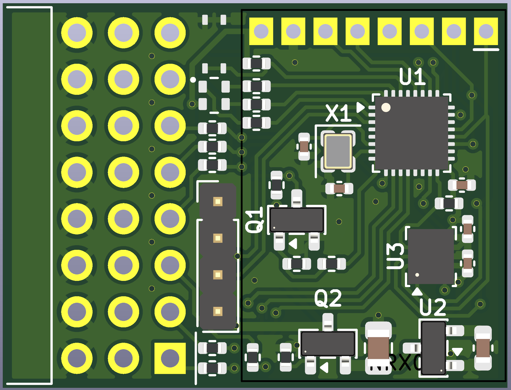
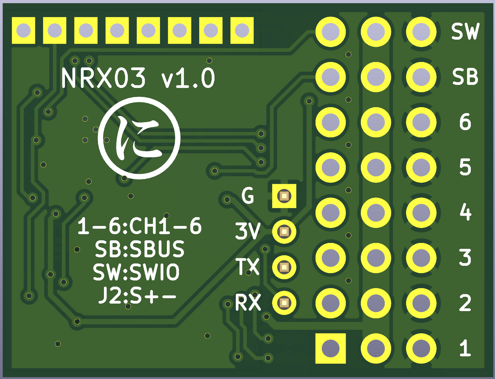

NRX03 S-FHSS 小型ジャイロ受信機
受信モジュール NRX01（TI CC2500）を上に重ねて載せる、27.5 × 21 mm の Futaba S-FHSS 受信機です。XIAO を使わず、CH32V006 マイコンと 6 軸センサーを基板に載せて小さくまとめました。
写真


特長
- 受信のみ：技適のない無線部（CC2500）からは電波を出さない設計です。
- 小型：NRX01 を重ねて 27.5 × 21 mm。サーボ端子まで 1 枚に入っています。
- S.BUS（標準の反転信号）と PWM 6 ch を出力します。S.BUS の端子は、設定を変えると PWM の 7 ch 目としても使えます。
- 6 軸センサー：ジャイロ・加速度（LSM6DS3TR-C）を載せ、ジャイロ機能に使う予定です。
- サーボ端子：3 列 8 本のピンヘッダ（PWM 6 ch・S.BUS・書き込み用）を基板の端に並べ、サーボや ESC をそのまま挿せます。
- 電源：BEC（最大 8.4 V）から 3.3 V の LDO で給電します。BEC の逆差しから守る回路付きです。
- バインドボタン：押しながら電源を入れると、送信機に結び付け直します。
- 状態表示：RGB LED で受信中・フェイルセーフなどを表示します。
- Bluetooth で設定：UART 端子（J3）に、別に開発中の Bluetooth モジュールをつなぐと、スマートフォンやパソコンから受信機の設定やジャイロのパラメーター調整ができます。
主な仕様
| 対応方式 | Futaba S-FHSS（2.4 GHz、30 ch 周波数ホッピング） |
|---|---|
| 出力 | S.BUS、PWM 6 ch（50 Hz）。設定で S.BUS の端子を PWM 7 ch 目にできる |
| マイコン | WCH CH32V006（RISC-V、48 MHz、フラッシュ 62 KB） |
| センサー | ST LSM6DS3TR-C（6 軸 ジャイロ・加速度） |
| 無線部 | NRX01（TI CC2500、受信のみ）を重ねて載せる |
| サーボ端子 | 3 列 × 8 本のライトアングル ピンヘッダ（2.54 mm）。1 列 = 信号・＋・－ CH1〜CH6（PWM）、SB（S.BUS）、SW（書き込み用、WCH-LinkE） |
| 電源 | BEC 最大 8.4 V（逆接続保護付き）→ 3.3 V LDO |
| 状態表示・操作 | RGB LED × 1、バインドボタン × 1 |
| UART 端子（J3） | 4 本（GND・3.3 V・TX・RX）、2.00 mm ピッチ。Bluetooth モジュール（開発中）をつなぐ |
| 基板 | 27.5 × 21 mm、2 層 |
| 原価（参考） | 部品 1 枚 約 360 円（NRX01・送料は含まず。基板はまだ発注していないため含まず） |
今後の予定
載せている 6 軸センサーを使って、ジャイロ機能を入れる予定です。
個人が趣味で開発している物なので、予定は変わることがあります。
状態
基板データを作成中です。ファームウェアはこれからです。